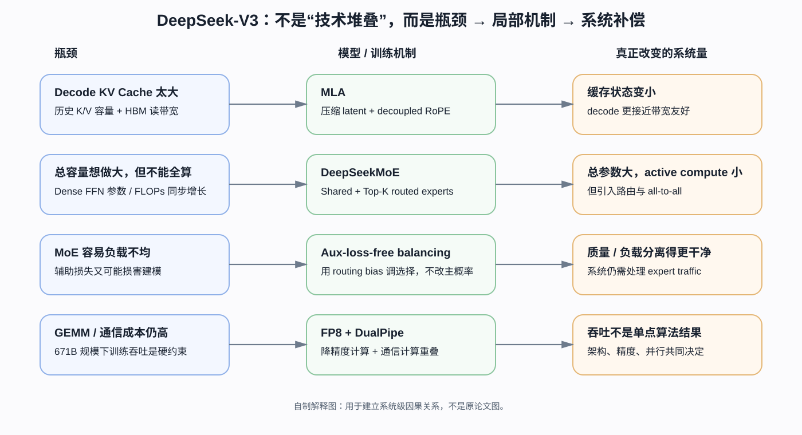
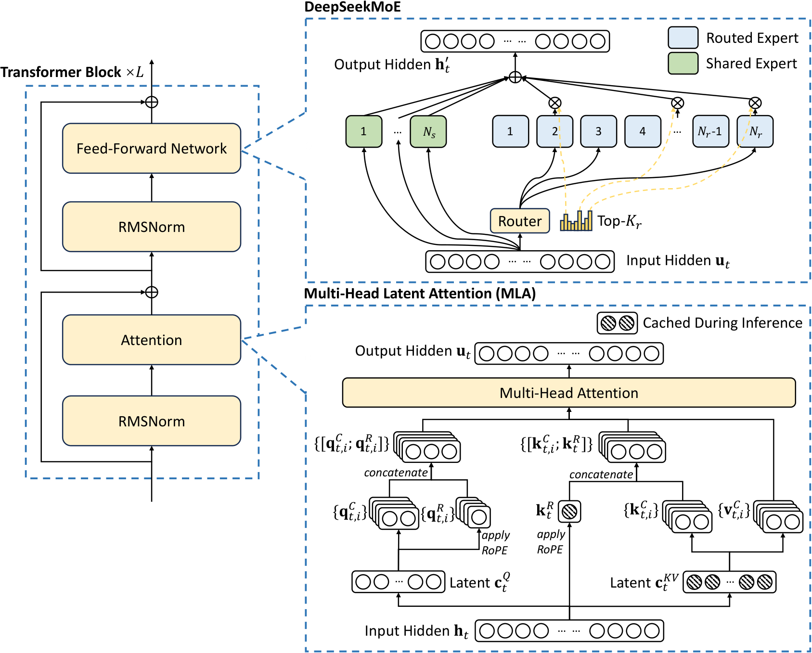
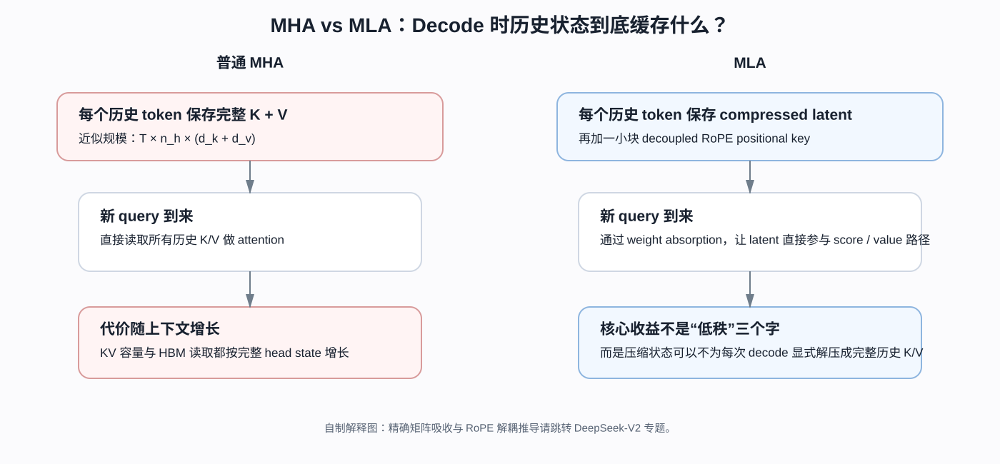
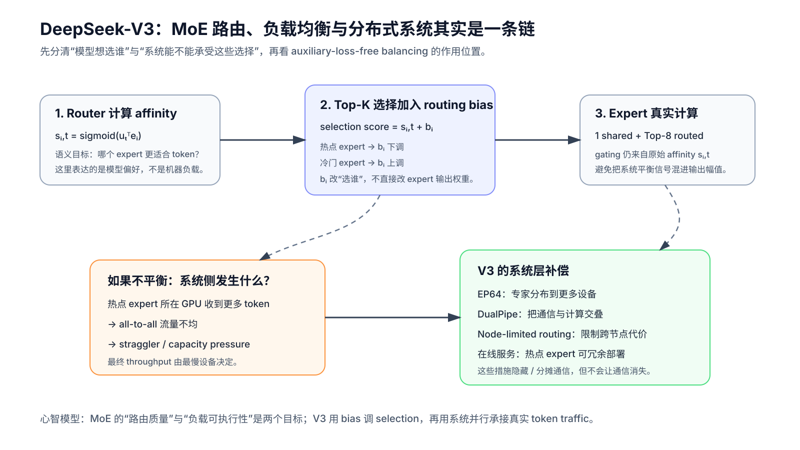
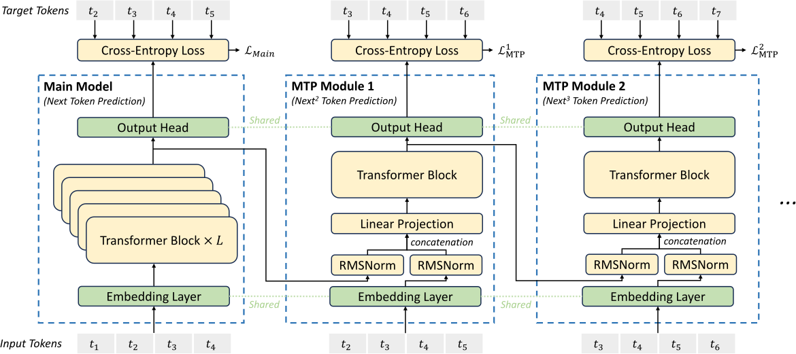
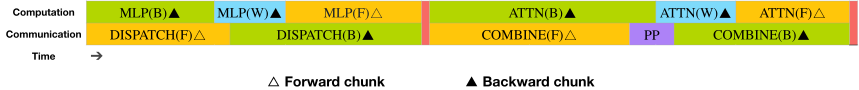
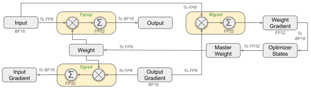

DeepSeek-V3：真正值得拆的不是“671B”，而是这 671B 怎样被做成可训练、可推理的系统
论文：DeepSeek-AI, DeepSeek-V3 Technical Report，本文以 arXiv v2（2025-02-18）为主版本。
类型：B · 完整模型技术报告。
一句话定位：这篇报告真正要回答的不是“671B 有多大”，而是 MLA、稀疏 MoE、负载均衡、MTP、FP8 与分布式系统怎样共同把一个 671B 模型变成可训练、可部署的系统。
阅读策略：这篇报告不是把 MLA、MoE、MTP、FP8、GRPO 各自“从零证明一遍”，而是先回答：DeepSeek-V3 作为一个完整 671B MoE 模型，为什么要把这些技术组合到同一个系统里？ 对阻塞理解的原始技术，再单独下钻原论文。
阅读导航：把 V3 当成主干，不要把所有技术摊平成清单
前置 / 回看
DeepSeek-V2：MLA 真正的关键不是低秩，而是让低维缓存直接参与 Decode —— 当你卡在 KV Cache、矩阵吸收、RoPE 解耦时回这里。
RoPE：位置旋转为什么会进入 MLA 的“不可吸收部分” —— 只有当 decoupled RoPE 的矩阵位置关系卡住时再回查。
当前文章内部会碰到的技术分支
DeepSeekMath / GRPO：真正被删掉的是 Critic，不是 PPO 的 Policy Optimization —— PPO → group-relative baseline → clipping → KL → token-level update 已经完整下钻。
RMSNorm —— V3 主干采用的归一化方式；本文只在完整 block 中定位，不重复基础推导。
后续主干
本文重点
MLA 到底改变了什么缓存状态，而不只是“做低秩压缩”；
671B total / 37B active 为什么把“模型容量”和“每 token 计算”拆开；
auxiliary-loss-free balancing 怎样把模型路由目标与系统负载目标分开；
MTP 为什么训练时存在、推理时可以删除；
DualPipe / EP / FP8 为什么不是架构之外的附录，而是 V3 能跑起来的必要组成；
哪些结论来自 controlled ablation，哪些只是完整系统结果。
怎么用这些链接？ 第一次读 V3 时不要一看到 MLA / MoE / GRPO 就立刻跳走。先在 V3 里理解“它为什么被需要、它接在系统哪里、它改变什么系统量”；只有公式或机制阻塞理解时，再进入对应原始方法文章。

自制解释图，不是原论文 Figure。先从左到右看：V3 的关键技术不是彼此并列的“创新点”，而是分别对应 KV Cache、稀疏容量、负载均衡和大规模训练吞吐这些不同瓶颈。
如果只记住“DeepSeek-V3 是 671B MoE、每 token 激活 37B”，其实几乎没读懂这篇论文。
更值得追问的是：
一个总参数达到 671B 的模型，为什么训练时没有被专家通信拖死？
为什么推理时不需要像普通 MHA 那样保存巨大的 KV Cache？
为什么 MoE 的专家不会全挤到少数几个节点？
为什么额外预测未来 token 能在推理时直接删掉、却仍改善主模型？
为什么 FP8 不能只是把 BF16 tensor 直接 cast 一下？
为什么这篇论文把“模型架构”“训练框架”“硬件建议”写在同一份技术报告里？
DeepSeek-V3 真正有代表性的地方，恰恰是它把模型参数化、训练目标、数值精度、分布式调度和在线部署连成了一套共同设计。
下面从整台机器，而不是从单个术语开始拆。
1. 先把 DeepSeek-V3 放回 DeepSeek 谱系：哪些是 V3 新东西，哪些不是？
论文 Introduction 非常刻意地先划清边界。
DeepSeek-V3 不是把 DeepSeek-V2 推倒重来。它明确保留了两块已经在 V2 中验证过的骨架：
MLA（Multi-head Latent Attention）：主要解决推理时 KV Cache 成本；
DeepSeekMoE：主要用稀疏专家扩大总参数，同时控制每 token 的实际计算。
V3 在这个基础上，再重点加入：
auxiliary-loss-free load balancing；
Multi-Token Prediction（MTP）训练目标；
大规模 FP8 mixed-precision training；
DualPipe 与 MoE all-to-all 的计算通信重叠；
面向在线服务的 prefill / decode 分离部署；
更大的模型规模、更多数据和新的后训练流程。
所以第一张谱系图应该写成：
DeepSeek-V2
├── MLA
└── DeepSeekMoE
│
▼
DeepSeek-V3
├── 继续使用 MLA
├── 继续使用 DeepSeekMoE
├── 改：auxiliary-loss-free load balancing
├── 加：MTP training objective
├── 加：大规模 FP8 training
├── 加：DualPipe / communication overlap
└── 加：新的 SFT + GRPO + R1 reasoning distillation
这里有一个很重要的阅读规则：
“V3 使用了某项技术”不等于“V3 首次提出了它”。
因此本文会先把 MLA、DeepSeekMoE 讲到足够理解 V3，但真正的 MLA 第一性原理与 DeepSeekMoE 原始方法，后面应回到 DeepSeek-V2 / DeepSeekMoE 单独下钻。
1.1 671B 和 37B 是两个完全不同的量
论文给出的模型规模：
而每个 token 激活的参数约为：
比例约为：
这就是 MoE 的核心经济学：
模型可以拥有非常大的“参数容量”，但单个 token 不需要经过全部参数。
但不能误解成“V3 每次前向只加载 5.5% 的整个模型，所以显存只需要 5.5%”。
因为：
所有专家权重仍然必须部署在整个集群；
不同 token 会路由到不同专家；
专家通常跨 GPU / 节点分布；
dispatch / combine 会引入 all-to-all 通信；
在线服务还要为热点专家做冗余副本。
MoE 把问题从：
“每个 token 要算所有参数”
变成：
“怎样让每个 token 只算少数专家，同时还能把 token 高效送到这些专家所在的设备？”
后半句才是 DeepSeek-V3 工程难点的来源。
2. 一条 token 在 DeepSeek-V3 里到底怎么走？
先不要进入 MLA 的公式。先看整个模型。

原论文 Figure 2。读图先抓两条主路径：左侧 Attention 使用 MLA；右侧 FFN 位置大部分层换成 DeepSeekMoE。V3 相对 V2 的核心新变化并不是把 Transformer 换掉，而是在已有 MLA + DeepSeekMoE 骨架上改路由平衡与训练目标。
论文给出：
Transformer 层数： $\( L=61; \)$
hidden dimension： $\( d=7168; \)$
attention heads： $\( n_h=128; \)$
每个普通 attention head 内容维： $\( d_h=128. \)$
一个 token 的主干可以抽象成：
token id
↓
Embedding: [B,T] → [B,T,7168]
↓
Transformer Layer 1
├── RMSNorm
├── MLA
├── Residual
├── RMSNorm
└── Dense FFN
↓
Transformer Layer 2
└── Dense FFN
↓
Transformer Layer 3
└── Dense FFN
↓
Transformer Layer 4 ... 61
├── MLA
└── DeepSeekMoE
├── 1 shared expert：总是执行
└── 256 routed experts 中 Top-8
↓
Final hidden state [B,T,7168]
↓
Output head
↓
Vocabulary logits
论文明确说明：
前三层 FFN 仍是 dense，剩余 FFN 才替换为 MoE。
每个 MoE 层：
1 个 shared expert；
256 个 routed experts；
每 token 激活 8 个 routed experts；
每个 expert 的 intermediate hidden dimension 为 2048。
这就解释了“总参数巨大”和“单 token 计算相对可控”如何同时成立。
2.1 模型级读法：不要把所有技术都摊平
从整条数据流看，V3 的关键技术其实各自解决不同位置的问题：
模块 |
它解决的主要问题 |
|---|---|
MLA |
decode 时 KV Cache / memory bandwidth |
DeepSeekMoE |
用较低 active compute 获得巨大参数容量 |
aux-loss-free balance |
MoE 专家负载均衡与模型质量冲突 |
MTP |
next-token 监督过稀，希望增加未来预测训练信号 |
DualPipe |
MoE 跨节点 all-to-all 太重 |
FP8 |
GEMM、activation memory、通信成本 |
GRPO |
post-training 时避免一个同尺寸 critic |
这张表非常关键。
如果把它们都写成“DeepSeek-V3 的创新点”，读者看完还是不知道为什么需要它们。
真正的模型设计是一串：
瓶颈 → 局部改造 → 新瓶颈 → 系统补偿。

自制解释图。它只帮助建立“MLA 为什么值得做”的心智模型：普通 MHA 把完整历史 K/V 当缓存对象；MLA 的关键不是单纯做一次低秩投影，而是让压缩后的 latent 能直接服务后续 decode。矩阵吸收和 RoPE 为什么让这件事变难，见 DeepSeek-V2 专题。
这一节先记住三件事
V3 不是从零发明 MLA / DeepSeekMoE，它把这些 V2 已验证模块继续推到更大规模；
671B total 和 37B active 描述的是不同资源维度，不能把 active ratio 直接当成部署显存比例；
后面每一项技术都要问一句：它到底改变的是参数容量、激活计算、缓存状态、通信，还是数值精度？
3. MLA：先别背公式，先问普通 MHA 在 decode 时到底贵在哪里
3.1 为什么生成第 100000 个 token 时，还需要前 99999 个 token 的 K/V？
标准自回归 MHA 中，第 \(t\) 个 token 在某层产生：
生成下一个 token 时，新 query 需要和所有历史 key 做 attention：
历史 token 的 query 已经不需要了，但历史：
必须保留。
这就是 KV Cache。
标准 MHA 每个 token、每层缓存的元素量约为：
代入 V3 的 head 配置作为一个“如果用普通 MHA”的对照：
个元素。
上下文越长，这个缓存按 \(T\) 线性增长；decode 每一步还要从显存读取越来越长的历史 KV。
所以在长上下文生成里，问题不仅是 FLOPs。
真正越来越明显的是：
KV Cache capacity + HBM bandwidth。
3.3 为什么 RoPE 不能简单和所有低秩投影一起“吸收”？
MLA 的效率不只是“低秩压缩”，还依赖一个非常关键的推理代数。
对于 content 部分，
attention score 中：
这里多个固定线性矩阵可以在推理实现里预先组合。
因此不一定要真的先把：
展开成每个 head 的完整 \(k_j^C\) 后再算 dot product。
同理，value up-projection 与最终 output projection 也存在可组合空间。
这正是：
“缓存低维 latent”能够变成真实 decode 节省，而不只是把缓存压小以后又立刻完整解压存回来
的关键。
但是 RoPE 是位置相关变换。
位置 \(j\) 的旋转矩阵依赖 \(j\)：
一旦某个投影被夹在位置相关旋转里，就不能像普通固定线性矩阵那样简单全部吸收到一个常量权重中。
因此 MLA 把携带 RoPE 的 key 单独拆出来：
最终每个 head 的 key 是：
这里特别值得注意：
\(\mathbf k_t^R\) 是共享的 decoupled key positional component，不是 128 个 head 各自缓存一份完整 RoPE key。
V3 设置：
因此论文说生成时真正需要 cache 的只有蓝框中的：
3.4 理论缓存量能压多少？
MLA 每 token 每层缓存：
个元素。
和上面的普通 MHA 对照：
个元素。
理论元素数量比：
也就是说，仅按论文这些维度做原始缓存元素量比较，MLA 大约减少到 MHA 的：
为了建立量级感，假设：
context length \(T=128000\)；
61 层；
每个 cache 元素按 BF16 2 bytes 粗算。
普通 MHA 对照的原始 KV 元素量：
对应约：
MLA：
约：
这不是 DeepSeek 实际服务显存报告。
它只是用论文公开维度做的单序列、全层、原始元素数量对照，没有计入：
sharding；
allocator；
batch；
metadata；
quantized cache；
kernel temporary buffer；
expert weights；
pipeline placement。
但它已经足够说明 MLA 为什么是一个推理系统级别的架构选择，而不是小修小补。
3.5 Query 为什么也压缩？
V3 还定义：
其中：
再上投影为 query content 和 query RoPE 部分。
这里 query compression 的主要收益不是 KV Cache，因为 query 不需要跨 decode step 长期保存。
论文明确把它和：
训练 activation memory
联系起来。
因此同一个 “low-rank compression”：
KV compression 主要影响 inference cache；
Q compression 更偏 training activation memory。
这就是模型报告里必须分清的“相同数学形状、不同系统目的”。
3.6 这一节先到哪里为止？
对 V3 主线来说，我们现在已经知道：
为什么普通 MHA 会产生巨大 KV Cache；
MLA 为什么只缓存 latent + RoPE key；
为什么 RoPE positional component 要 decouple；
为什么这会直接改变 decode memory footprint。
如果到这里仍然卡在：
矩阵 absorption 为什么成立；
RoPE 为什么破坏固定线性吸收；
MLA 与 MQA/GQA 到底是在压同一个维度，还是不同的状态空间；
不要继续在 V3 里硬塞更多公式，直接跳到 DeepSeek-V2 / MLA 专题。如果只是 MQA/GQA 的共享 KV 逻辑不熟，则先回 MQA / GQA。
4. DeepSeekMoE：671B 为什么不是每个 token 都算 671B？
如果 MLA 主要在解决推理缓存，那么 DeepSeekMoE 解决的是另一个维度：
怎样让模型拥有更大的参数容量，而不让每个 token 都支付同等规模的 FFN 计算。
4.1 先看 dense FFN
标准 Transformer 中，每个 token 都会经过同一个 FFN：
无论这个 token 是：
Python 代码；
中文历史；
数学证明；
英文对话；
都走同一组 FFN 参数。
如果继续把 FFN hidden width 做大，所有 token 的计算都会同步增加。
4.2 MoE 的朴素想法：把一个巨大 FFN 换成很多专家，只选少数几个
DeepSeekMoE 将 FFN 写成：
V3 中：
shared experts： $\( N_s=1; \)$
routed experts： $\( N_r=256; \)$
每 token 选： $\( K_r=8. \)$
shared expert 总是执行。
routed expert 只执行 Top-8。
因此一层 MoE 对一个 token 实际访问的是：
1 shared expert
+
8 routed experts
而不是 256 个 routed experts 全部计算。
4.4 Router 在做什么？
V3 用：
计算 token \(t\) 与 expert \(i\) 的 affinity。
之后只保留 Top-\(K_r\)：
然后在被选中的专家中归一化：
注意 V3 报告特别写到，它与 V2 的一个小差异是：
affinity 使用 sigmoid，再对 selected affinity 做归一化。
但路由本身马上带来一个非常现实的新问题。
5. 负载均衡：MoE 最大的问题之一，不是“不会选专家”，而是“太会选某几个专家”
假设 256 个专家中，router 发现 expert 17 和 expert 42 特别好用。
如果大量 token 都选它们：
这些 expert 所在 GPU 过载；
其他 expert GPU 空闲；
all-to-all 后大家必须等最慢设备；
训练 throughput 被 straggler 拖住；
极端时还会发生 routing collapse。
所以系统希望：
专家负载不要太失衡。
传统做法往往加入一个 auxiliary load-balancing loss：
这看起来非常合理。
但它有一个根本矛盾：
\(L_{\text{LM}}\) 希望 token 去“最有用的专家”；
\(L_{\text{balance}}\) 希望 token 去“负载更均匀的专家”。
只要 \(\alpha>0\)，主任务梯度就被混入了一个系统约束。
\(\alpha\) 太小：
平衡不住。
\(\alpha\) 太大：
为了平衡牺牲语言模型最优路由。
5.1 V3 的关键想法：把“选谁”与“专家输出权重”拆开
DeepSeek-V3 为每个 expert 维护一个 routing bias：
选择 Top-K 时使用：
但真正乘 expert output 的 gating weight 仍来自原始 affinity：
而不是：
也就是说：
b_i
只影响：
“这个 expert 有没有被选中”
不影响：
“被选中后，这个 expert 输出乘多大权重”
如果 expert \(i\) 当前 overloaded：
如果 underloaded：
这其实很像一个独立在主梯度之外运行的负反馈控制器：
expert load 太高
↓
降低 routing bias
↓
未来更难进入 Top-K
↓
load 降低
5.2 为什么这叫 auxiliary-loss-free，却又不是“完全没有辅助 loss”？
这是一个很容易被标题误导的地方。
V3 的主要 batch-wise load balance 不依赖传统 auxiliary balancing loss。
但是论文同时保留一个很小的：
complementary sequence-wise auxiliary loss
用于防止单个 sequence 内部出现极端不均衡。
预训练超参数中：
因此准确说法是：
主要负载均衡机制不再通过主任务中的传统 auxiliary balancing loss 驱动，但仍保留很小的 sequence-wise 辅助约束。
不能写成：
“DeepSeek-V3 训练完全没有任何 load-balance auxiliary loss。”
5.3 为什么 batch-wise 比 sequence-wise 更允许专家 specialization？
假设当前一个 sequence 全是代码。
真正专业化的 router 可能自然希望更多 code tokens 去少数代码 expert。
如果要求每个 sequence 内都近似均匀：
你实际上在阻止领域 specialization。
batch-wise balance 则允许：
代码 sequence
→ 专家 A/B/C 偏重
历史 sequence
→ 专家 D/E/F 偏重
整个大 batch 加总
→ 全局负载仍近似平衡
这就是论文 §4.5.3 的重要解释。
更关键的是，作者没有只停留在 Figure 9 的“专家看起来更专业”。
他们额外做了 batch-wise auxiliary loss 对照。
结果显示：
当 balance scope 同样放宽到 batch-wise 时，传统辅助 loss 也能达到与 auxiliary-loss-free 类似的 validation loss。
这意味着真正值得注意的机制不只是：
“bias 更新神奇地更强”
还包括：
不要把负载均衡约束得过细，尤其不要强迫每条 sequence 自己均匀。
这个结论比营销式的“无辅助损失更好”更细。

自制解释图，不是原论文 Figure。最重要的是把三件事分开：原始 affinity 表示“模型想选谁”；routing bias 只调 Top-K selection；真实 token traffic 进入 expert parallel 后，才变成 all-to-all、热点 expert 与 straggler 的系统问题。
这一组你应该记住什么
DeepSeekMoE 解决的是 “总参数容量可以很大，但每 token 只激活少数 FFN 参数”；
router 的语义偏好与集群的负载约束不是同一个目标；
V3 的 bias 主要改“进入 Top-K 的机会”，而不是把负载信息直接乘进 expert 输出；
即使路由更平衡，跨设备 token dispatch 仍然存在，所以后面的 EP、DualPipe 与通信重叠不是可选装饰。
如果你卡在这里
不懂 fine-grained experts / shared expert isolation → 去 DeepSeekMoE 原始方法；
不懂为什么负载均衡会变成 all-to-all / straggler 问题 → 继续读本文 §7；
想判断“auxiliary-loss-free 是否真的更强” → 不要停在机制描述，继续看本文 §12 的消融证据。
6. MTP：为什么 next-token prediction 还嫌监督不够密？
标准 causal LM 在每个位置：
虽然一个长度 \(T\) 的序列有 \(T\) 个 token loss，但对每个 hidden state来说，主要直接监督只指向下一个 token。
MTP 的直觉是：
如果当前位置表示不仅要对 \(t_{i+1}\) 有用，还要对更远的 \(t_{i+2},t_{i+3}\) 有用，会不会逼它学习更“面向未来”的表征？
原论文 Figure 3 非常适合看这个问题。

先看横向：Main Model 预测 next token；MTP Module 1 继续预测 next² token；Module 2 继续预测 next³ token。再看绿色连线：embedding 与 output head 和主模型共享。V3 实际使用 \(D=1\)，也就是只增加一个额外未来 token 的预测深度。
6.1 V3 实际不是并行放很多独立 head
V3 的设计和“每个 hidden state 上挂 D 个平行分类头”不同。
第 \(k\) 个 MTP module 会把：
上一深度的 hidden representation： $\( h_i^{k-1}; \)$
真值未来 token embedding： $\( \operatorname{Emb}(t_{i+k}) \)$
拼接：
再通过：
投影回 hidden size：
然后再过一个 Transformer block：
最后共享主模型 output head：
它保持了一条 sequential causal prediction chain。
6.2 V3 实际 \(D=1\)
论文 Figure 3 画了 Module 1、Module 2、……
这是通用设计示意。
真正的 DeepSeek-V3 超参数：
也就是说：
主模型正常预测 next token；另外再训练一个 MTP module 预测再往后一个 token。
不要看到 Figure 3 就写成“V3 实际用了多级 MTP 堆叠”。
6.3 训练损失
每个 depth：
总 MTP：
V3 的 \(\lambda\) 不是固定常数：
前 10T tokens： $\( \lambda=0.3; \)$
后 4.8T tokens： $\( \lambda=0.1. \)$
这说明作者把 MTP 当作：
训练期的额外监督约束
而不是永久改变主模型输出定义。
6.4 为什么推理时可以直接删？
论文明确说：
MTP 的主要目标是改善 main model，因此推理可以直接丢弃 MTP modules。
这意味着 ablation 时：
baseline；
baseline + MTP training；
在推理阶段可以拥有完全相同的主模型推理成本。
这让 MTP 的实验很有价值。
论文 Table 4 在 15.7B total / 2.4B active 与 228.7B total / 20.9B active 两个尺度上做对照，保持数据和其他结构不变。
例如 large MoE：
HumanEval： $\( 44.5\rightarrow53.7; \)$
GSM8K： $\( 72.3\rightarrow74.0; \)$
MATH： $\( 38.6\rightarrow39.8. \)$
但 MMLU：
反而下降。
所以最准确的结论是：
MTP 在论文给出的两个模型尺度上大多数 benchmark 有收益，尤其部分代码/推理任务明显，但并非每项指标单调提升。
6.5 speculative decoding 是副产品，不是 V3 主部署方案的必需条件
MTP modules 还可以被重新利用做 speculative decoding。
但论文明确区分：
主要目标：训练更好的 main model；
可选用途：推理时 speculative decoding。
因此技术依赖图上应标：
MTP → DeepSeek-V3 pretraining objective：IMPLEMENTS
MTP → speculative decoding：OPTIONAL
7. 一个 MoE 模型真正难训练的地方：不是 GEMM，而是 token 在机器之间乱跑
当 expert 分散在不同 GPU / node 上时，router 选完 expert 后，token activation 必须被发送到 expert 所在设备。
一层 MoE 的真实执行更像：
Attention
↓
Router
↓
dispatch all-to-all
↓
各 GPU 上对应 Expert MLP
↓
combine all-to-all
↓
Residual / next layer
如果计算和通信串行：
专家越细、跨节点越多，all-to-all 越严重。
DeepSeek 报告说，V3 cross-node expert parallelism 的 computation-to-communication ratio 大约接近：
也就是说这已经不是“顺便优化一下网络通信”。
通信本身足以和计算同量级。
7.1 训练并行配置先看清
2048 张 H800。
整体训练使用：
16-way Pipeline Parallelism；
64-way Expert Parallelism，跨 8 个节点；
ZeRO-1 Data Parallelism；
不使用 Tensor Parallelism。
不使用 TP 在 671B 模型上非常值得注意。
它不是说 TP 一般不好，而是：
他们通过 MoE 参数切分、pipeline、memory optimization，把 TP 通信从主训练路径中拿掉。
7.2 DualPipe 的目标不是减少通信字节，而是把通信藏到计算下面
原论文 Figure 4：

这张图真正应该看“上下两行时间是否并行推进”。上方是 MLP/Attention compute，下方是 dispatch/combine/PP communication。DualPipe 的思想不是让 all-to-all 消失，而是重新切 chunk、拆 backward-for-input / backward-for-weight，并让通信尽量和另一部分计算同时发生。
如果串行：
如果能完全 overlap：
这就是为什么论文会使用“hide communication”这种语言。
hide 并不等于通信量变成 0。
网络仍然真的传了数据；只是 wall-clock critical path 上，通信不再完全额外累加。
7.3 为什么 backward 要拆 input grad 和 weight grad？
标准 Linear / MLP backward 至少包含两个主要方向：
Dgrad：对输入求梯度；
Wgrad：对权重求梯度。
它们依赖关系并不完全相同。
DualPipe 借鉴 ZeroBubble 思路进一步拆：
Backward
├── backward for input
└── backward for weights
这样 scheduler 得到更多可重排的小块，就有机会把：
all-to-all；
PP communication；
attention；
MLP；
交错起来。
这是典型的系统设计：
不是减少算法总工作量，而是改变 work 的时间组织。
7.4 训练系统为什么属于模型论文，而不只是“运维附录”？
因为 DeepSeekMoE 本身选择了：
256 routed experts；
fine-grained expert；
EP64；
cross-node routing。
这会直接产生 all-to-all。
也就是说：
架构先制造了系统瓶颈，系统设计再把这个瓶颈压回可接受范围。
所以 V3 是非常适合学习“算法—系统 co-design”的模型技术报告。
8. FP8：低精度训练绝不是“把 BF16 改成 8 bit”
如果只是：
BF16 tensor
↓ cast
FP8 tensor
↓ GEMM
大规模训练很容易被：
outlier；
dynamic range；
accumulation error；
gradient precision
击穿。
DeepSeek-V3 的 FP8 章节真正有价值的地方，在于它把“哪里能低精度、哪里不能”拆得非常细。

读图要分三条 GEMM：Fprop、Dgrad、Wgrad。它们使用 FP8 GEMM；但输出、master weight、weight gradient、optimizer state 并不是全部变成 FP8。V3 的方法本质是 mixed precision，而不是“全模型 FP8”。
8.1 哪些核心 GEMM 用 FP8？
对于 Linear：
forward GEMM：Fprop；
activation-gradient GEMM：Dgrad；
weight-gradient GEMM：Wgrad；
三者都执行 FP8 GEMM。
这才带来主要 tensor-core compute benefit。
8.2 哪些地方仍保留高精度？
论文明确保留：
embedding；
output head；
MoE gating；
normalization；
attention；
在更高精度。
另外：
master weights：FP32；
accumulated weight gradients：FP32；
AdamW 一阶/二阶 moment：BF16。
因此“DeepSeek-V3 是 FP8 模型”这种表述太模糊。
更准确是：
计算密集型 GEMM 大量使用 FP8，但数值敏感状态和算子选择性保留 BF16/FP32。
8.3 为什么 fine-grained quantization 很关键？
如果一个巨大 tensor 只用一个 scale：
那么少数 outlier 会把：
拉得很大。
结果是大多数正常值只能用很粗的量化间隔。
V3 改成：
activation：\(1\times128\) tile；
weight：\(128\times128\) block；
分别估计 scale。
可以把直觉理解成：
不让一个局部 outlier 决定整张大矩阵的量化刻度。
这也是他们能够统一使用 E4M3、而不是对 backward 全部切到更大 exponent 的 E5M2 的重要基础之一。
8.4 为什么 accumulation 还要“升回” FP32？
低精度乘法并不等于低精度长累加也安全。
矩阵乘法一个输出元素：
当 \(K\) 很大时，误差会累积。
V3 在 Tensor Core 做一段 FP8 MMA 后，每隔：
个元素，把 partial sum promotion 到 CUDA Core 的 FP32 register 做高精度 accumulation。
这是一种很典型的折中：
乘法：
尽量使用高吞吐 FP8 Tensor Core
长累加：
周期性转到 FP32
这也解释了论文为什么最后直接给硬件厂商提建议：
如果 Tensor Core 原生支持更高精度 accumulation、group scaling、online quantization，软件就不必这样来回搬数据。
所以 §3.5 “hardware suggestions” 不是跑题，而是前面系统设计遇到硬件限制后的自然结论。
这一组你应该记住什么
MoE 的主要系统瓶颈不是“专家矩阵乘不动”，而是 token dispatch / combine 带来的通信与负载不均；
DualPipe 的目标是 overlap communication，不是让通信成本凭空消失；
FP8 的收益来自低精度计算与通信，但稳定训练依赖 fine-grained scaling、受控累加精度和高精度 master state；
当论文开始讨论硬件原语时，说明这里已经从“模型算法”进入真正的软硬件协同设计。
如果你卡在这里
卡在 expert routing 与通信的对应关系 → 回看上一张 MoE 系统解释图；
卡在“为什么 FP8 不能直接 cast” → 重点重读 §8.2–§8.4；
想继续追 kernel / 通信 / pipeline 的底层实现 → 这属于后续 C 类系统论文，而不是继续往 V3 模型页里堆实现细节。
9. 预训练：14.8T tokens 只是一个数字，真正该看的是完整训练 recipe
9.1 数据不是“多一点”，而是有方向地改
相对 DeepSeek-V2，V3 报告强调：
增加数学与编程数据比例；
扩大英文/中文之外的多语言覆盖；
减少冗余同时保持 diversity；
document packing；
继续使用 FIM。
FIM 使用 PSM 格式，比例：
tokenizer：
byte-level BPE；
vocabulary： $\( 128K. \)$
新 pretokenizer 还合并部分 punctuation + line break token，但作者发现这可能导致 multiline prompt 的 token-boundary bias，因此训练时会随机拆分一部分组合 token。
这个细节很有代表性：
tokenizer 不是训练前一次固定的“基础设施”；它会直接影响 few-shot prompt 的边界行为。
9.2 模型超参数
V3：
MLA：
MoE：
每 token：
每个 expert intermediate size：
每 token 最多发送到：
MTP：
9.3 optimizer 和 schedule
使用 AdamW：
最大 sequence length 在主预训练阶段：
学习率先 warmup 2000 steps 到：
保持到约 10T tokens 后，再 cosine decay。
最后 500B tokens 使用更低的分段 constant LR。
这说明一个经常被忽略的事实：
超大模型训练并不是一条“标准 cosine curve 从头跑到尾”。
论文实际用了非常明确的 token-budget-aware schedule。
batch size 也不是固定：
并在前 469B tokens 渐增。
9.4 128K 不是从头用 128K 预训练
主预训练：
之后两阶段 context extension：
每阶段：
使用 YaRN。
而且 YaRN 只施加到 MLA 的 decoupled RoPE key：
这又一次体现 MLA 和 position encoding 不是完全独立的两块积木。
如果以后单独拆 YaRN，必须回到这里解释：
为什么 V3 不需要对所有 latent content projection 做同样的 RoPE extension。
10. 后训练：V3 的 chat 能力不是 Base checkpoint 自然长出来的
V3 的 post-training 大致是：
DeepSeek-V3-Base
↓
SFT data construction
├── reasoning data：内部 DeepSeek-R1 / expert model
└── non-reasoning：DeepSeek-V2.5 + human verification
↓
SFT：1.5M instances, 2 epochs
↓
Reward
├── rule-based
└── model-based RM
↓
GRPO
↓
DeepSeek-V3 chat/instruct behavior
10.1 SFT reasoning data：这已经开始和 R1 主线相连
论文说 reasoning data 来自内部 DeepSeek-R1 系列模型。
但 R1 raw reasoning 存在：
overthinking；
formatting poor；
output too long。
所以目标不是简单：
“把 R1 输出全部蒸馏给 V3”。
而是：
保留 verification / reflection patterns，同时控制答案风格与长度。
这也是为什么 V3 后训练部分已经自然把下一篇论文指向：
DeepSeek-R1。
10.2 1.5M SFT instances
instruction tuning 数据共约：
SFT：
2 epochs；
cosine LR： $\( 5\times10^{-6} \rightarrow 1\times10^{-6}. \)$
sequence 会 pack 多个 sample，但采用 sample masking，让不同 sample 互相不可见。
这里和预训练 document packing 要区别：
packing 是为了设备利用率；mask 决定不同样本能不能在 attention 中互相看到。
10.3 为什么 RL 不只用一个 learned reward model？
对数学、代码这类可以确定验证的任务，V3 用 rule-based reward：
数学最终答案规则；
LeetCode compiler / test cases。
原因很直接：
能用确定程序验证，就不要让另一个神经网络猜“对不对”。
这会降低 reward hacking 的一部分空间。
对自由问答、创作等才使用 model-based RM。
10.4 GRPO 在这里先只讲模型级意义
GRPO 对一个 prompt \(q\) 采样一组：
用组内 reward 做标准化：
最重要的模型级意义：
不再训练一个通常与 policy 同规模的 critic / value model，而从组内样本 reward 估 baseline。
这对 671B 级模型的 post-training 成本非常敏感。
但 GRPO 的：
importance ratio；
clipping；
KL；
group baseline 偏差/方差；
与 PPO 的关系；
不应该塞在 V3 文章里一次讲完。
这个节点后面应该下钻：
DeepSeekMath / GRPO 原始方法。
这一组你应该记住什么
V3-Base 的能力主要来自预训练，Chat / reasoning 行为来自后训练；
rule-verifiable task 与 model-based reward 服务不同类型的数据；
GRPO 在 V3 页面只需要理解“为什么它能省掉 learned critic”以及它在 pipeline 中的位置；
ratio、clip、KL、group baseline 的统计性质不属于模型报告主线。
如果你卡在这里
卡在 GRPO 的数学 → 跳 DeepSeekMath / GRPO 专题；
卡在 reasoning RL 为什么会进一步发展成完整多阶段流程 → 直接进入 DeepSeek-R1；
卡在 Base Model 的 MLA / MoE 底座 → 分别回 DeepSeek-V2 与 DeepSeekMoE。
11. 推理部署：Prefill 和 Decode 不是同一种工作负载，所以 V3 干脆分开部署
这是 V3 报告里很值得系统学习的一段。
11.1 Prefill
长 prompt 一次性进入模型。
特点：
token 多；
GEMM 大；
expert batch 相对大；
compute utilization 容易做高。
V3 的最小 prefill deployment unit：
4 nodes；
32 GPUs。
Attention：
TP4；
Sequence Parallel；
DP8。
MoE：
EP32。
并且部署：
个 redundant experts。
热点 expert 会根据在线统计周期性复制 / 重排。
11.2 Decode
decode 每一步每个 sequence 通常只新增一个 token。
特点：
单 expert batch 变小；
attention 历史越来越长；
memory access / KV 成本更突出；
latency 比大 GEMM utilization 更敏感。
V3 的最小 decoding deployment unit：
40 nodes；
320 GPUs。
Attention：
TP4 + SP；
DP80。
MoE：
EP320。
这里每个 GPU 基本只放一个 expert，并有：
张 GPU 用于 redundant/shared experts。
论文还直接说 decode 阶段每个 expert 的 batch 通常：
瓶颈更偏：
memory access，而不是 computation。
这就是为什么同一个模型：
prefill 和 decode 可以使用完全不同的并行配置。
11.3 为什么冗余 expert 不是“浪费参数”？
训练时你希望每个 expert 只保存一份，避免额外显存。
在线服务时目标变了：
SLO 和 load balance 更重要。
如果 expert 17 特别热门，只部署一份：
大量请求
→ expert 17 所在 GPU 排队
→ 其他 GPU 可能空闲
→ tail latency 恶化
复制 hotspot expert：
expert 17
├── replica A
├── replica B
└── replica C
就能用额外显存换吞吐和延迟稳定性。
这是很典型的：
training-optimal placement ≠ serving-optimal placement。
12. 实验：哪些证据真的能支持“这个设计有效”？
一篇技术报告最容易被 benchmark 大表淹没。
对于模型理解，最重要的其实不是“V3 在 MMLU 是多少”，而是控制变量更干净的消融。
12.1 MTP：这是相对干净的消融
论文在两个 MoE scale 上：
数据相同；
其他 architecture 相同；
只增加 1-depth MTP；
inference 时删除 MTP module。
所以 Table 4 能较有力地支持：
MTP training objective 本身对多个任务有增益。
但不是所有 benchmark 都升。
因此结论是“多数任务改善”，不是“无条件改善”。
12.2 auxiliary-loss-free：也有较强控制
作者保持：
training data；
architecture；
sigmoid gating；
top-K normalization；
基本一致。
然后：
baseline：纯 auxiliary-loss balance；
variant：去掉这些 balance loss，加入 bias-based balance。
多数指标改善。
但 §4.5.3 又进一步发现：
batch-wise auxiliary loss 可以达到类似 validation loss。
所以更深的结论应是：
balance scope 的自由度本身很重要；sequence-wise 过强约束可能压制 expert specialization。
12.3 671B 最终 benchmark 不能用于单独证明某个组件
V3 vs：
DeepSeek-V2；
Qwen2.5 72B；
Llama 3.1 405B；
存在同时变化：
总参数；
active parameters；
token budget；
data mixture；
tokenizer；
architecture；
training system；
post-training；
evaluation protocol。
所以最终 leaderboard 只能回答：
“完整 V3 系统在这些 benchmark 上表现如何？”
不能回答：
“MLA 单独带来了多少分。”
12.4 训练成本数字必须带上作者自己的限定条件
论文报告官方训练总计：
其中：
pre-training： $\( 2.664\text{M}; \)$
context extension： $\( 0.119\text{M}; \)$
post-training： $\( 0.005\text{M}. \)$
按作者假设：
得到：
但是论文自己明确说明：
这个数字只计 official DeepSeek-V3 training，不包括之前的 research、architecture/data/algorithm ablations。
所以严谨写法是：
“论文报告的正式训练运行成本”
而不是：
“DeepSeek-V3 从研发到最终模型只花了 557.6 万美元。”
13. 论文细读：这篇报告的写法本身就在告诉我们“什么是主贡献，什么只是继承”
13.1 Abstract 第一段其实已经把整篇论文拆成三层
Abstract 的组织是：
模型层：
671B total / 37B active
+ MLA
+ DeepSeekMoE
算法新增：
aux-loss-free balance
+ MTP
训练系统：
14.8T tokens
+ FP8
+ efficient infrastructure
这不是普通摘要里的“堆关键词”。
作者有意识地把：
architecture / objective / infrastructure
放在同一个贡献叙事里。
原因是对这个规模的 MoE 来说，三者不能独立存在。
13.2 Introduction 为什么先说 “still adopts MLA and DeepSeekMoE”？
“still adopts” 这类措辞非常重要。
它是在主动降低 novelty claim：
MLA 与 DeepSeekMoE 不是 V3 新发明，它们已经在 V2 验证。
接着才用：
“Beyond the basic architecture…”
引出真正新增的 load balancing 与 MTP。
这就是阅读模型报告时必须做的“贡献去重”。
不能把 V3 用到的所有技术都挂成：
DeepSeek-V3 PROPOSES。
13.3 “pioneers auxiliary-loss-free” 和 “we have observed MTP improves…” 的证据强度不同
论文介绍 load balance 时使用较强 novelty 语言。
而讲 MTP 的最初动机时，使用的是：
“we have observed…”
这说明在进入消融以前，它首先是一个经验观察驱动的训练 objective。
后面 contributions 又写 “prove it beneficial”。
这里的 “prove” 不是数学 theorem。
证据是：
controlled ablation 在两个模型尺度上，多数 benchmark 改善。
所以中文技术博客最好写成：
“通过消融验证其收益”
而不是：
“数学证明 MTP 必然提高性能”。
13.4 为什么 Architecture 后面立刻是 Infrastructure，而不是 Pre-training？
论文结构：
2 Architecture
3 Infrastructures
4 Pre-Training
5 Post-Training
V3 在正式讲 data/training 前，先花很长篇幅讲：
cluster；
PP / EP / DP；
DualPipe；
all-to-all；
memory saving；
FP8；
inference deployment；
hardware suggestions。
作者实际上在表达：
如果不先解释这套 infrastructure，671B / 256 experts / FP8 这些架构配置根本不知道怎样真实跑起来。
这也是 V3 最适合作为“大模型算法工程”阅读入口的原因。
13.5 FP8 章节为什么写到了未来芯片建议？
如果这只是一个数值精度技巧，hardware suggestion 会很突兀。
但前文已经遇到：
Tensor Core accumulation precision；
CUDA Core promotion；
tile scale；
online quantization；
transposed GEMM；
SM 被通信占用。
于是 §3.5 实际是在说：
“我们的软件 workaround 暴露了现有硬件接口不适合这种训练模式的地方。”
这是一种非常成熟的 system co-design 报告写法：
算法需要什么
↓
现有硬件哪里不匹配
↓
软件如何绕
↓
绕法有什么 overhead
↓
下一代硬件应该原生支持什么
13.6 “training cost only …” 要把限定语一起读
作者多次强调 economical cost。
但真正认真读到 Table 1 后面的注释，会发现：
不包含之前 research / ablation cost。
因此这类技术报告的数字阅读原则是：
标题数字永远和计量边界一起摘录。
GPU hours、tokens、activated params、latency 都一样。
14. 从 DeepSeek-V3 反向生成下一步技术依赖树
读完 V3 后，不应该马上按线性论文清单顺序读下一篇。
应该看：
哪些节点已经阻塞进一步理解？
当前依赖树：
DeepSeek-V3
│
├── MLA
│ ├── DERIVED_FROM / EXTENDS: DeepSeek-V2
│ ├── ADOPTS: RoPE
│ └── 对照: MHA / MQA / GQA
│
├── DeepSeekMoE
│ ├── DERIVED_FROM: Sparsely-Gated MoE / GShard / Switch
│ ├── ADOPTS: fine-grained routed experts
│ └── ADOPTS: shared expert isolation
│
├── Auxiliary-Loss-Free Load Balance
│ ├── V3: IMPLEMENTS / EXTENDS
│ └── 关键问题: batch-wise vs sequence-wise balance
│
├── MTP
│ ├── ADOPTS / EXTENDS: multi-token prediction ideas
│ └── OPTIONAL: speculative decoding
│
├── Training System
│ ├── PP16
│ ├── EP64
│ ├── ZeRO-1
│ ├── DualPipe
│ └── all-to-all overlap
│
├── FP8
│ ├── tile/block-wise quantization
│ ├── high-precision accumulation
│ └── low-precision activation / communication
│
└── Post-Training
├── SFT
├── R1 reasoning distillation
└── GRPO
└── DERIVED_FROM: DeepSeekMath
14.1 下一篇不应该是谁？
不是 Backprop。
不是 Word2Vec。
也不是“线性论文编号中的下一项”。
14.2 从这里应该往哪里走？
在这条技术主线中，V3 的两个架构级依赖已经可以直接站内回查：
DeepSeek-V2 / MLA：MHA → latent compression → weight absorption → decoupled RoPE；
DeepSeekMoE：fine-grained experts + shared expert isolation。
模型主线也已经继续到了：
DeepSeek-R1：把 V3-Base 接到 reasoning post-training。
所以沿这条技术链继续，最自然的阻塞节点已经变成：
DeepSeekMath / GRPO 专题：PPO critic → group-relative baseline → clipping → KL → token-level policy update 已经闭环，可随时回查；
FP8 / DualPipe 再作为 C 类系统支线单独拆。
这就是“模型是树干，方法是按阻塞程度展开的分支”，而不是把 论文资源清单 当成线性进度条。
15. 读完这一篇，至少应该能不看论文回答这些问题
如果下面的问题只能背关键词，说明还没真正读懂：
为什么 MLA 的核心不是“低秩”三个字，而是“只缓存 \(c^{KV}\) 和 decoupled RoPE key”？
为什么 RoPE 部分不能和 content projection 一样被完全吸收到固定线性矩阵？
为什么 671B total parameters 和 37B active parameters 不能用同一个数字讨论推理成本？
为什么 MoE 的 load balance 是模型质量问题，同时也是分布式系统问题？
为什么 auxiliary-loss-free strategy 的 bias 只影响 Top-K selection，不直接改 expert output gate？
为什么 V3 仍然保留一个很小的 sequence-wise auxiliary loss？
为什么 MTP 能训练时增加参数和计算，推理时却可以完全丢掉？
为什么 DualPipe 是“隐藏通信”，而不是“消灭通信”？
为什么 FP8 训练仍要保留 FP32 master weights、FP32 gradients 和更高精度敏感算子？
为什么 V3 的 prefill 与 decode 要采用不同集群拓扑和 expert redundancy 策略？
为什么 Table 4/5 比最终 benchmark leaderboard 更能说明两个新设计的因果作用？
为什么 V3 读完后，下一篇自然应该是 DeepSeek-V2 / MLA，而不是 线性论文编号中的下一项？
能把这 12 个问题连成一条因果链，DeepSeek-V3 才算真正成为我们后续 LLM 技术树的第一根“主干”。
继续阅读：按你的困惑分流
“MLA 为什么能只缓存 latent？” → DeepSeek-V2 / MLA
“shared expert / fine-grained routed expert 为什么这样设计？” → DeepSeekMoE
“V3-Base 后面怎样变成 reasoning model？” → DeepSeek-R1
“GRPO 为什么可以不要 Critic，clip/KL 又怎么来的？” → DeepSeekMath / GRPO